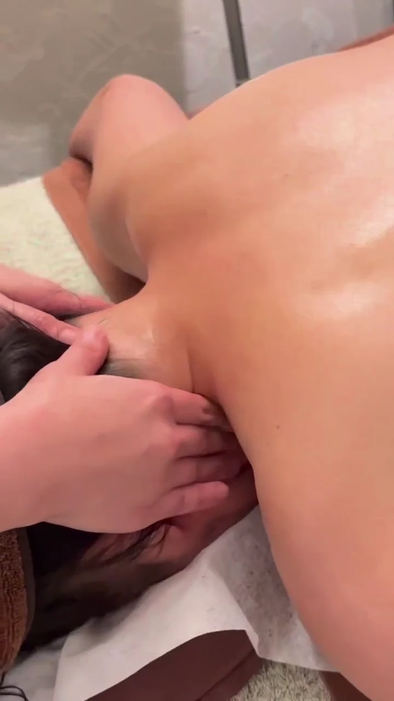
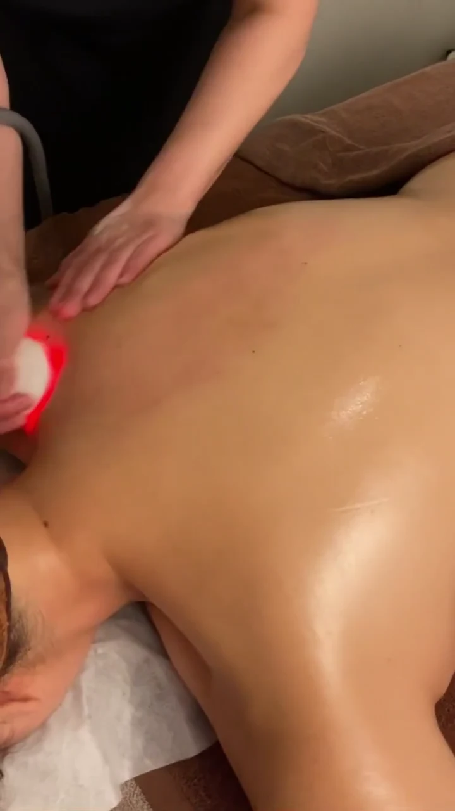
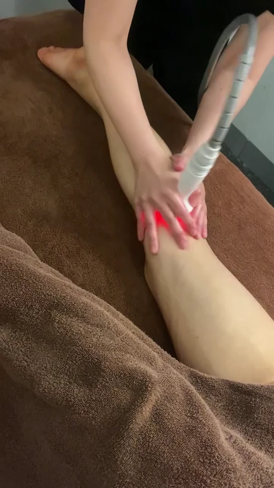
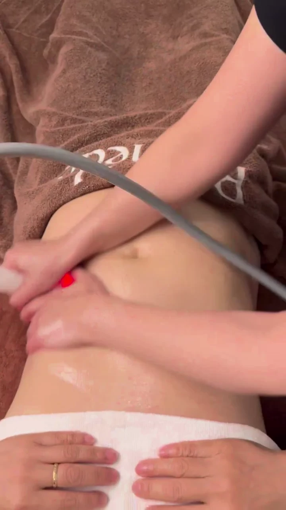

01 / BODY SIGNATURE90 MIN
전신 시그니처 케어
어깨와 등부터 하체까지. 에너지테라피와 고주파, 수기로 전신을 꼼꼼하게 살피는 라메드의 기본 전신 케어입니다.
정상가 120,000원첫 체험100,000원
RAMÈDE ESTHETIC
에너지테라피를 중심으로 고주파와 수기를 함께 진행하는 전신 관리입니다.

ENERGY THERAPY · RADIO FREQUENCY · MANUAL CARE
원하는 부위와 컨디션을 충분히 이야기한 뒤
관리 구성과 소요 시간을 안내합니다.
전신부터 바디라인까지.
첫 방문 1회 체험가 · 리뷰 작성 필수어깨와 등부터 하체까지. 에너지테라피와 고주파, 수기로 전신을 꼼꼼하게 살피는 라메드의 기본 전신 케어입니다.
수기 근막케어, 고주파, 에너지테라피에 전신 원적외선 기기관리를 더한 구성. 조금 더 여유롭게 나에게 집중하는 전신 코스입니다.
바디라인이 고민될 때. 후면의 어깨·등·허리·하체와 전면의 복부·허벅지·데콜테를 수기와 고주파·기기로 관리합니다.
THE ART OF PERSONAL CARE
라메드의 실제 관리 순간을 만나보세요.

에너지테라피
내게 맞는 관리 상담 ↗
등·어깨 고주파
내게 맞는 관리 상담 ↗
다리 고주파
내게 맞는 관리 상담 ↗
복부 고주파
내게 맞는 관리 상담 ↗실제 관리 장면입니다. 관리 부위와 구성은 상담을 통해 안내합니다.
BEFORE YOUR VISIT
처음이라 궁금한 것들.
시그니처는 90분, 스페셜은 120분입니다. 스페셜은 전신 원적외선 기기관리가 포함되어 관리 시간에 차이가 있습니다. 자세한 구성은 상담 시 안내합니다.
처음에는 첫 체험 가격으로 전신 스페셜 케어를 추천드립니다. 다만 원하는 관리 부위와 컨디션을 먼저 듣고 적합한 구성을 함께 상담합니다.
처음 방문하시는 고객에게 1회 적용하며 리뷰 작성이 필수입니다. 전신 시그니처·스페셜·슬리밍·헤드스파에 적용됩니다. 부위별 맞춤케어와 스킨케어는 별도의 3회 구성입니다.
일반적으로 주 1회 간격을 안내하되, 컨디션과 관리 목적에 따라 달라집니다. 상담에서는 불편한 부위, 질환 여부, 운동·수면 습관, 스트레스와 부종 등 전반적인 컨디션을 확인합니다.
원하는 관리와 방문 일정을 알려주시면 가능한 시간을 상담 후 안내합니다. 카카오채널 또는 전화로 먼저 문의해주세요. 운영시간 조율도 상담 가능합니다.
YOUR OWN MOMENT
오늘의 컨디션과 원하는 관리를 이야기해주세요.
상담 · 예약 문의 ↗